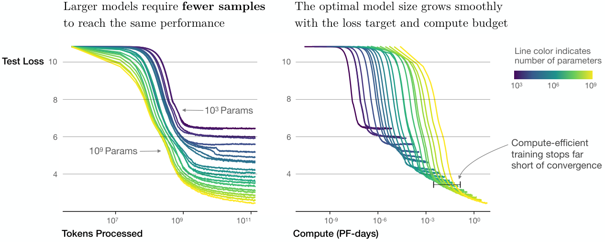

第 4 章 · 预训练、缩放定律与涌现
后训练的每一分收益都建立在预训练奠定的底座之上。本章回答四个问题：预训练在优化什么、喂什么数据；算力与模型规模遵循什么缩放定律；"涌现能力"是真实相变还是度量伪影；以及一个 base 模型到手时，你该期待它什么、警惕它什么。这些是判断"后训练能做到什么、不能做到什么"的全部依据。
1. 预训练在整条训练流水线中的位置
把一个随机初始化的 Transformer 变成一个能对话、会推理的助手，要经过三个阶段：预训练（pretraining）在数万亿 token 的互联网语料上做下一个词预测，把语言、知识、代码与初步推理能力压进权重，占总算力的 95% 以上；监督微调（SFT）用几万到百万条指令数据教会模型"以助手的方式说话"（第 12 章）；偏好对齐 / 强化学习用人类或 AI 的偏好信号优化行为（第 4 部分）。有些流水线还在预训练与 SFT 之间插入继续预训练 / 退火阶段：用更高质量的数据（教科书、代码、数学）在低学习率下收尾，LLaMA 3 与 Qwen2.5 都明确报告了这一步。
对于后训练工程师，预训练阶段的关键不在于"怎么做"（你大概率不做预训练），而在于三个判断依据。其一，能力上限。预训练注入的知识与推理潜力决定了后训练的天花板——第 7 章会展开的行业共识是"模型的能力上限由预训练决定，表现由后训练数据决定"，InstructGPT 用 1.3 万条示范让 1.3B 模型的回答胜过 175B GPT-3（arXiv:2203.02155），反过来，一个数学底子薄弱的 base 模型，再多 SFT 也变不成奥赛选手。其二，缺陷清单。base 模型不会指令遵循、会幻觉、未对齐（第 6 节），这些缺陷恰恰定义了后训练要解决什么问题。其三，算力感知。理解预训练的算力结构（6ND，第 4 节）能让你判断：给定的 base 模型是"训练计算最优"还是"过训练省推理"，该继续预训练（第 17 章）还是直接 SFT。
本节小结：预训练用 95% 的算力注入能力，SFT 与对齐用 5% 的算力决定表现；后训练工程师要做的不是复刻预训练，而是读懂它的产出。
2. 预训练目标与数据配比
现代 LLM 的预训练目标就是第 3 章的因果语言建模（Causal Language Modeling, CLM）：对每个位置最大化 \(p_\theta(x_t \mid x_{<t})\)，损失为全序列的负对数似然。历史上还有另一条路线——掩码语言建模（Masked Language Modeling, MLM）：BERT（Devlin et al., 2018, arXiv:1810.04805）随机遮住约 15% 的 token 让模型还原，得到双向上下文的表示。两者的分工在今天已经非常清晰：CLM 适配生成与自回归采样，MLM 适配判别与检索类任务。生成式助手必须逐 token 采样、且 RLHF 需要逐 token 的 log 概率，因此后训练的舞台只属于 CLM 模型；T5 的 span corruption 是介于两者之间的折中，同样不适合作为对话底座。
比目标更重要的是数据。预训练语料以 CommonCrawl 类网页爬虫为主体，配比大致是：网页文本占大头（约 60%~80%），代码 5%~20%，数学与推理语料 2%~10%，多语言文本按目标市场调整，外加百科、书籍、论文等高质量来源。几个有公开数字的参照系：LLaMA 3 用约 15.6T token，在 LLaMA 2 基础上大幅提高了代码与数学的比例，并用启发式分类器把"高质量"网页的采样率提高了数倍（arXiv:2407.21783）；Qwen2.5 报告 18T token；DeepSeek-V3 用 14.8T。数据配方还包含时间维度：训练末期切换到高质量、去污染的数据做退火（annealing），因为低学习率阶段记住的内容会被更牢固地固化。
在算力预算固定时（下一节的缩放定律），预训练团队真正能"设计"的东西不多：架构几乎同质（第 3 章表 3-3），优化器与超参高度标准化，剩下的核心自由度就是什么数据、什么比例、什么顺序。代码数据提升逻辑推理与工具调用，数学数据提升链式推理，多语言比例决定中文能力，这些配比最终穿过 base 模型传导到后训练：一个代码占比高的 base 模型做智能体后训练（第 31 章）的起点，会明显高于纯网页语料模型。理解你手上 base 模型的配方倾向，是规划后训练数据（第 2 部分）的前提。
本节小结：CLM + 海量配比数据是现代预训练的标准形态；配比决定 base 模型的能力倾向，也预先划定了后训练各方向的起跑线。
3. 缩放定律：Kaplan 与 Chinchilla
缩放定律（scaling laws）回答的问题是：当算力预算扩大 \(x\) 倍，参数、数据、算力应如何分配，损失能改善多少。Kaplan et al.（2020, arXiv:2001.08361）在跨 7 个数量级的实验中发现，语言模型损失与参数量、数据量、算力都呈幂律关系。固定数据量时：
\[ L(N) = \left(\frac{N_c}{N}\right)^{\alpha_N}, \qquad \alpha_N \approx 0.076 \]其中 \(N\) 为非嵌入参数量。更有用的形式是把损失写成"不可约损失 + 两项幂律修正"：\(L(N, D) = L_\infty + \left(N_c/N\right)^{\alpha_N} + \left(D_c/D\right)^{\alpha_D}\)。Kaplan 的核心结论偏向模型：给定算力预算，应把大部分算力投给更大的模型，而不是更长的训练——其训练计算最优的分配近似为 \(N_{\mathrm{opt}} \propto C^{0.73}\)、\(D_{\mathrm{opt}} \propto C^{0.27}\)。GPT-3（175B，仅约 300B token）正是这一哲学的产物。
Hoffmann et al.（2022, arXiv:2203.15556，即 Chinchilla 论文）用三种互补方法（固定模型规模扫数据、固定数据扫模型、参数化拟合损失曲面）重做了实验，得到几乎相反的结论：参数与数据应当等比例扩展，训练计算最优的比例约为每参数 20 个 token。据此，70B 的 Chinchilla（1.4T token）在损失与多数下游任务上明显超过 280B 的 Gopher（0.3T token）——同样的算力，"更小更多数据"赢了。其拟合形式为：
\[ L(N, D) = E + \frac{A}{N^{\alpha}} + \frac{B}{D^{\beta}}, \qquad E \approx 1.69,\; A \approx 406.4,\; B \approx 410.7,\; \alpha \approx 0.34,\; \beta \approx 0.28 \]
| 维度 | Kaplan et al. (2020) | Chinchilla / Hoffmann et al. (2022) |
|---|---|---|
| 最优分配 | 偏模型：\(N_{\mathrm{opt}} \propto C^{0.73}\)，\(D_{\mathrm{opt}} \propto C^{0.27}\) | 等比例：约 20 token/参数，\(N_{\mathrm{opt}} \propto C^{0.5}\)、\(D_{\mathrm{opt}} \propto C^{0.5}\) |
| 代表产物 | GPT-3（175B / 0.3T token） | Chinchilla（70B / 1.4T token，胜过 Gopher 280B） |
| 损失曲面拟合 | 幂律修正 \(L_\infty + (N_c/N)^{0.076} + (D_c/D)^{0.095}\) | \(E + A/N^{0.34} + B/D^{0.28}\) |
| 适用边界 | 数据近乎无限、只优化训练损失 | 同样以训练损失为目标，不含推理成本 |
| 工程启示 | "大力出奇迹"造大模型 | 先按 20:1 估算数据需求，再按产品调整 |
Chinchilla 优化的是"训练算力换训练损失"，但部署后的推理成本要由整个生命周期摊销。一个 70B 模型服务数亿请求的推理电费，远超多训练 10T token 的电费。因此 LLaMA 2/3、Qwen 等模型普遍"过训练"：LLaMA-3-8B 吃了 15T+ token，约为 Chinchilla 最优（8B × 20 = 160B token）的 100 倍，换取一个可以在推理端大量铺开的小模型。此外，当数据本身受限（互联网语料接近耗尽）时，重复若干 epoch 在 4 个 epoch 以内损失仍近似单调改善（Muennighoff et al., 2023, arXiv:2305.16264），这为"过训练"提供了另一个合法性来源。读任何缩放定律，先问：它优化的是什么目标、在什么数据假设下成立。
本节小结：Kaplan 说"模型优先"，Chinchilla 说"参数与数据 1:20 等比"；现实中的开源模型为了推理成本普遍大幅过训练——缩放定律是指南针，不是导航仪。
4. 算一笔账：训练 FLOPs 与 6ND 公式
Transformer 训练的算力估算有一个极简而好用的近似：每个参数、每个 token，前向约需 2 FLOPs（一次乘加），反向约为前向的两倍（4 FLOPs），合计 6 FLOPs。于是总训练算力为：
\[ C \approx 6 \times N \times D \]其中 \(N\) 是参数量、\(D\) 是训练 token 数。这个公式忽略了注意力项（上下文很长时占比上升）、激活重计算（约增加 1.33 倍）、检查点与通信开销，但对"量级判断"绰绰有余——第 42 章会给出含注意力项与显存的完整版本。两个热身算例：7B 模型训 1T token，\(C \approx 6 \times 7\times10^9 \times 10^{12} = 4.2\times10^{22}\) FLOPs；LLaMA-3-405B 训 15.6T token，\(C \approx 3.8\times10^{25}\) FLOPs。后者按单卡 H100 bf16 峰值约 990 TFLOPS、模型算力利用率（MFU）40% 折算，约需 2.6 千万 H100 卡时——与 Meta 报告的 30.84M H100 小时（含工程开销）同一量级，说明 6ND 估算足够可信。
把 6ND 与 Chinchilla 的 20:1 合并，可以快速估算任何算力预算下的最优配置。下面的脚本把这两笔账都算给你：
def training_flops(n_params: float, n_tokens: float) -> float:
"""训练总算力估算：前向 2ND + 反向 4ND = 6ND（忽略注意力项与重计算）"""
return 6 * n_params * n_tokens
def gpu_hours(flops: float, tflops_per_gpu: float = 990.0, mfu: float = 0.4) -> float:
"""换算 GPU 卡时：H100 bf16 峰值约 990 TFLOPS，MFU 取 40%"""
effective = tflops_per_gpu * 1e12 * mfu
return flops / effective / 3600
def chinchilla_optimal(compute: float) -> tuple:
"""给定算力预算 C，估算 Chinchilla 训练计算最优的 (N, D)
经验公式：N_opt ≈ 8.98e-6 * C^0.72，D_opt ≈ 20 * N_opt"""
n_opt = 8.98e-6 * compute ** 0.72
return n_opt, 20 * n_opt
# 算例 1：LLaMA-3-405B（15.6T token）
C = training_flops(405e9, 15.6e12)
print(f"总 FLOPs: {C:.2e}") # 约 3.8e25
print(f"H100 卡时: {gpu_hours(C) / 1e6:.1f} M") # 约 26M，论文报告 30.84M（含开销）
# 算例 2：给定算力预算，Chinchilla 会怎么分？
for label, c in [("GPT-3 时代预算", 3.14e23), ("LLaMA-3-8B 实际投入", 6 * 8e9 * 15e12)]:
n, d = chinchilla_optimal(c)
print(f"{label}: Chinchilla 最优 N≈{n/1e9:.1f}B, D≈{d/1e12:.2f}T")
# 第二行输出约 N≈67B / D≈1.3T：8B/15T 是把推理成本计入后的“过训练”决策立项前先算三笔：目标 base 模型继续预训练要多少卡时（第 17 章）、你的 SFT/RL 实验预算折合多少 token（后训练数据通常只有亿级 token，算力可以忽略——瓶颈在数据与环境）、rollout 生成占多少（RL 训练中生成往往占一半以上时间，第 45 章）。这套估算决定了"该租多少卡、训多久、上多大模型"，是第 54 章实战项目的起点。
本节小结：\(C \approx 6ND\) 是预训练算力的第一近似；配上 20:1 与 MFU 折算，任何预算的"模型多大、数据多少、卡时几何"都能心算出来。
5. 涌现能力之争：真实相变还是度量伪影
2022 年，Wei et al.（arXiv:2206.07682）把"涌现能力（emergent abilities）"推成热点：某些能力（多位数算术、多步推理、词序还原）在模型规模较小时接近随机水平，跨过某个算力阈值后突然跃升，呈"相变"状。这篇论文把"规模"重新变成行业兴奋点：既然能力会涌现，那么"更大"本身就值得信仰。
一年后，Schaeffer et al.（arXiv:2304.15004）给了这个叙事一记釜底抽薪：《Are Emergent Abilities of Large Language Models a Mirage?》。涌现可能是度量方式制造的假象：如果你用不连续的指标（exact match：全对才得分），底层的平滑进步就会被表现为"突变"——模型从"对 3 位"进步到"对 7 位"时，exact match 一直是 0，直到最后一个错误也被消灭才跳变。作者换了连续指标（token 编辑距离、Brier 分数）重新分析，多条"涌现曲线"变回了平滑幂律。此外，测试集在低分区的统计噪声、以及"能力定义本身依赖某几个基准"的巧合，都会制造伪涌现。
公平地说，争论没有完全终结：跨步骤依赖的任务（最后一步必须建立在所有前序步骤全对之上）确实存在类似相变的组合结构；grokking 等现象也说明优化动力学可以产生真实的非线性。但对工程师更有操作价值的结论是 Schaeffer 版的：不要指望"再撑一撑规模，能力会自己涌现"；要看连续指标的平滑曲线，把可以度量的中间步骤度量出来。这个立场在后训练中的回报是直接的——DeepSeek-R1-Zero 用 RL 把 base 模型 AIME 2024 pass@1 从 39.7% 推到 71.0%（arXiv:2501.12948），靠的不是等涌现，而是把"答对/答错"这个可验证信号变成密集的优化压力；这正是第 5 部分推理强化（RLVR）的思路。同理，评测选型时优先选择连续或部分得分的指标（第 38、41 章），避免被伪涌现误导决策。
本节小结：涌现的叙事来自不连续指标 + 规模崇拜；工程上应假设"底层进步是平滑的"，用连续指标测量、用可验证信号与后训练把能力激发出来。
6. base 模型：能力清单与缺陷清单
拿到一个 base（预训练）模型，第一件事是校准预期。它有三大真实能力。一是知识存储：数万亿 token 中的事实、代码、语言模式被压缩进权重，这是参数知识（下一节展开）。二是上下文学习：在提示词里给几个输入-输出示例，它能照着模式完成任务——这是 GPT-3 论文最重要的发现，也意味着很多"微调需求"其实可以先用 few-shot 提示验证（第 7 章的"先提示后训练"原则）。三是续写式的条件生成：给它恰当的"开头"，它能续出高质量文本，包括看起来像对话的内容。
但它有五个系统性缺陷，每一个都对应一类后训练工作。其一，无指令遵循：你问"法国的首都是哪里"，它大概率续写"德国的首都是哪里？……"——它在补全一个 QA 语料模式，而不是回答你。SFT 的任务就是把"续写分布"改造成"应答分布"（第 12 章）。其二，幻觉：缺失的知识由高置信度的编造补齐，语言流畅与事实正确毫无关联（第 35 章展开校准与诚实性）。其三，无对齐：没有"我不能帮助你做 X"的概念，可能复述训练语料中的有害内容（第 6 部分）。其四，格式与退化：无对话模板概念（特殊 token 只是普通 token），且贪心解码下容易陷入重复循环——neural text degeneration 是 base 模型的经典病灶（Holtzman et al., 2019, arXiv:1904.09751）。其五，无元认知：它不知道自己不知道什么，不会拒绝、不会承认不确定。表 4-2 把两侧对照起来。
| 维度 | base 模型（预训练后） | instruct/chat 模型（后训练后） |
|---|---|---|
| 对"问题"的响应 | 续写补全，可能追加更多问题 | 直接回答并保持角色 |
| 指令遵循 | 无（除非指令形似训练文本） | 核心能力，含格式/长度/语言约束 |
| 拒绝与安全 | 无，跟随语料任意输出 | 有政策边界，能拒答/转话题 |
| 多轮对话 | 无状态概念，常自说自话 | 遵循模板、维持上下文角色 |
| 采样敏感性 | 贪心易退化重复 | 经过偏好优化，分布更受控 |
| 知识容量 | 满配（预训练全部摄入） | 基本保留，但可能被遗忘侵蚀（第 16 章） |
本节小结：base 模型 = 知识 + 模式 + 续写机制，缺指令遵循、对齐与元认知；后训练不增加知识，而是把"会"改造成"会以正确的方式回应"。
7. 参数知识 vs 上下文学习：两种"知识注入"
"让模型知道 X"有两条完全不同的路径，混淆它们是后训练立项阶段最常见的错误。参数知识（parametric knowledge）：知识以权重数值的形式存储，只能通过梯度更新写入——预训练、继续预训练、SFT 都属于此类，特点是写入慢、成本高、容易被新训练冲掉旧知识（灾难性遗忘，第 16 章），且以"分布"而非"条目"的形式存在：一万条"2025 年新规定是……"的 SFT 数据，未必能让模型可靠地记住每一条事实。上下文学习（In-Context Learning, ICL）：把知识放在提示词里，前向传播时以激活的方式参与计算，不改动任何权重；GPT-3 证明只需 few-shot 示例就能驱动它，检索增强生成（RAG）本质上是"把检索结果作为上下文注入的 ICL"。
| 维度 | 参数知识（预训练 / SFT 写入） | 上下文学习（ICL / RAG 注入） |
|---|---|---|
| 载体 | 权重数值 | 提示词 token |
| 写入方式 | 梯度下降，需训练 | 拼接文本，零训练 |
| 更新成本 | 高（训练流水线 + 评测） | 极低（改一段文本） |
| 时效性 | 冻结在训练截止日 | 实时可换 |
| 容量上限 | 极大（分布压缩） | 受上下文窗口限制 |
| 典型用途 | 语言、常识、技能、行为模式 | 实时事实、私有文档、任务示例 |
这条区分线给后训练立项一个清晰的判断框架：需求是"行为"还是"事实"？让模型学会用 JSON 格式调用工具、学会分步骤思考、学会拒绝某些请求——这些是行为分布的改造，后训练（SFT + 偏好优化）是对的工具；让模型回答"我们公司 2026 年 Q3 的报价单"——这是事实查询，用 RAG/ICL，别指望一万条 SFT 样本能可靠注入一个动态知识库。领域知识密集的场景往往两者都要：第 17 章的领域继续预训练负责把领域语感写进参数，第 12 章的 SFT 负责教表达方式，检索层负责实时事实。
本节小结：参数知识改分布、ICL 给事实；"后训练教行为、RAG 给知识"是避免把力气花错地方的第一决策原则。
8. 数据质量与去重：FineWeb 给预训练上的一课
缩放定律隐含一个假设：数据分布固定、质量恒定。现实中，决定 15T token 价值的是清洗流水线。HuggingFace 的 FineWeb（Penedo et al., 2024, arXiv:2406.17557）把 CommonCrawl 的 96 份快照走了一遍完整的现代流水线：URL 过滤与去重、语言识别、Gopher 类启发式规则（文档长度、符号占比、重复行）、MinHash 近重复去重、以及基于小模型的文档级质量过滤；其教育子集 FineWeb-Edu 进一步用 LLaMA-3-70B 标注"教育价值"、蒸馏训练一个小分类器，从 44 份快照中筛出 1.3T 高教育价值 token。结论直接：同一算力下，FineWeb 训出的模型在知识型基准（MMLU 等）上显著优于历史上的 C4、FineWeb 旧版与 RedPajama 类混合——数据质量与去重的收益，等价于数倍的算力收益。
去重尤其值得后训练工程师理解，因为它的三重作用会在你自己的数据工程（第 10 章）里重演。其一，防止记忆与污染：评测集混入训练集（数据污染）会让 benchmark 虚高，直接污染你的模型选型决策（第 41 章专题展开）。其二，提高单位 token 价值：重复内容让模型在"背书"而非"泛化"上花算力；数据受限时适度重复（≤4 epoch）有收益，但那是"有控制的重复"，与"没去重的脏重复"是两回事。其三，降低有害内容的密度：低质 SEO、色情、模板化 spam 往往高度重复，去重顺带压缩了它们的占比。下面是 MinHash-LSH 近重复检测的最小示意，FineWeb 的生产实现（datatrove 库）在分布式上更复杂，但原理一致：
from datasketch import MinHash, MinHashLSH
def minhash_signature(text: str, num_perm: int = 128) -> MinHash:
"""5-gram shingle 后构建 MinHash 签名（简化示意，生产用 datatrove 分布式版）"""
words = text.split()
shingles = {" ".join(words[i:i + 5]) for i in range(max(len(words) - 4, 1))}
m = MinHash(num_perm=num_perm)
for s in shingles:
m.update(s.encode("utf-8"))
return m
lsh = MinHashLSH(threshold=0.8, num_perm=128) # Jaccard 相似度阈值 0.8
keep = {}
for doc_id, text in corpus.items(): # corpus: {id: 文档文本}
sig = minhash_signature(text)
dup = lsh.query(sig) # 已有近邻 => 疑似重复
if not dup:
lsh.insert(doc_id, sig)
keep[doc_id] = text # 保留首次出现的样本
print(f"原始 {len(corpus)} 篇，去重后保留 {len(keep)} 篇")本节小结：预训练的"暗科技"在数据流水线：质量过滤 + MinHash 去重可以兑换数倍算力的效果；同一套思想（去污染、去模板、控重复）直接迁移到后训练数据工程。
与去重孪生的另一个质量动作是数据去污染：把评测基准（如 MMLU、GSM8K）从训练语料中剔除，否则模型"背过题"的分数会污染你的选型与缩放判断。GPT-3 时代采用的 13-gram 重叠检验至今仍是工业界主流做法——任何与基准测试共享 13 个连续词的文档都被视为污染候选：
def ngrams(text: str, n: int = 13) -> set:
"""按词级别构建 n-gram 集合（GPT-3 使用 13-gram 检验基准污染）"""
words = text.lower().split()
if len(words) < n:
return set()
return {" ".join(words[i:i + n]) for i in range(len(words) - n + 1)}
def is_contaminated(doc: str, benchmark_ngrams: set, n: int = 13) -> bool:
"""文档与任一基准样本共享 13-gram 即视为污染候选，人工复核后剔除"""
return bool(ngrams(doc, n) & benchmark_ngrams)
# benchmark_ngrams = set().union(*(ngrams(q + " " + a) for q, a in benchmark_items))
# clean_corpus = [d for d in corpus if not is_contaminated(d, benchmark_ngrams)]
# 生产实现应先做归一化（大小写/标点/空白），并在片段级而非文档级复核去污染的成本远低于它挽回的损失：一旦污染进入预训练，你在第 7 部分（评测）得到的所有结论都建立在沙子上，而它在训练期只是多一行过滤代码。这条工序在第 41 章（评测陷阱与数据污染）会从评测侧再讲一遍。
9. 常见开源 base 模型盘点
后训练项目从选 base 模型开始。截至本书写作，开源生态的主力选手如表 4-4（均为可作后训练底座的 base/预训练版本；许可证以官方 LICENSE 文本为准，商用前务必逐条核对）。
| 系列 | 规格 | 预训练数据 | 上下文 | 许可证（要点） |
|---|---|---|---|---|
| LLaMA 3 / 3.1 (Base) | 8B / 70B / 405B | 约 15T+ token，多语与代码加权 | 8k（3.1：128k） | Llama Community License：可商用，月活超 7 亿需 Meta 授权，有可接受使用政策 |
| Qwen2.5 (Base) | 0.5B ~ 72B 全谱系 | 约 18T token，中文强、代码数学占比高 | 32k（部分 128k YaRN） | 多数 Apache 2.0；3B 为 Qwen Research，72B 为 Qwen 许可 |
| Gemma 2 (pt) | 2B / 9B / 27B | 约 13T token，蒸馏辅助训练 | 8k | Gemma 条款：可商用，需接受使用政策与禁止事项 |
| DeepSeek-V3 / V3-Base | 671B MoE（激活约 37B） | 14.8T token，多语 + 代码数学强化 | 128k | 代码 MIT；模型许可允许商用（R1 系权重为 MIT） |
| OLMo 2 | 7B / 13B / 32B | Dolma 语料，全要素开源（数据/代码/日志） | 4k | Apache 2.0，学术友好、可审计 |
选型时建议按五个问题过一遍。一，许可证与合规：Llama 系与 Gemma 系的"开源"附带使用政策与规模门槛，Qwen 多数规格与 OLMo 是更宽松的 Apache 2.0；涉及出海或金融/医疗场景，逐条读限制条款。二，语言匹配：中文业务优先看 tokenizer 对中文的压缩率（第 3 章）与中文评测，Qwen/DeepSeek 在这上有先天优势。三，规模 vs 算力：按第 4 节的公式估算全量微调与 LoRA（第 14 章）两条路线的显存预算。四，MoE 与 dense：DeepSeek-V3 这类 MoE 激活参数少、推理便宜，但全量微调与 RL 的显存/工程复杂度更高，小团队建议从 dense 8B~32B 起步。五，配套生态：有没有现成的 SFT/对齐配方可复用（Tulu 3 的配方基于 Llama 系，第 47 章）、社区 LoRA/量化/推理引擎支持是否成熟。最后记住：base 模型发布页给出的"Instruct 版"评测与你即将训练的版本无关——你要评估的是 base 权重的底子，方法是 few-shot 探测 + 小规模 SFT 冒烟测试。
本节小结：开源 base 模型的选择面足够宽；按许可证、语言匹配、规模预算、MoE/dense、生态五个维度选型，并用 few-shot 与小规模 SFT 探测 base 底子，而不是迷信发布页的 Instruct 评测。
10. 本章小结
- 流水线定位：预训练以 95%+ 算力完成能力注入（CLM + 配比数据），后训练决定这些能力以什么行为表现出来。
- 缩放定律：Kaplan 偏模型、Chinchilla 主张每参数 20 token；现实模型普遍"过训练"以摊薄推理成本，数据受限时适度重复可用。
- 算力直觉：\(C \approx 6ND\)；LLaMA-3-405B 约 3.8e25 FLOPs、3000 万级 H100 卡时——量级判断先于一切优化。
- 涌现之争：不连续指标制造相变假象（Schaeffer et al.）；工程上信连续曲线与可验证信号，不信"等规模解锁"。
- base 模型：有知识、有 ICL、会续写；无指令遵循、会幻觉、未对齐、易退化——五项缺陷正是后训练五个工作面的由来。
- 知识注入二分法：行为与技能走参数（后训练），动态事实走上下文（RAG/ICL）。
- 数据质量：FineWeb 证明质量过滤与 MinHash 去重可兑换数倍算力；去污染意识必须前置到自己的数据流水线。
从这里开始，本书进入方法主体。但方法都建立在一个形式化框架上：把语言模型的生成过程看作序贯决策。为此需要先补齐强化学习的数学基础——这是下一章的任务。
问题 1：LLaMA-3-8B 用 15T token 训练，远超 Chinchilla 最优（约 160B token）。既然如此"浪费"，为什么 Meta 还这么做？
因为 Chinchilla 优化的是"训练算力换训练损失"，不含推理成本。8B 模型要在推理端大规模部署，每多训 10T token 的一次性成本，远小于让 70B 模型承担同等服务质量所增加的终身推理成本。用 6ND 估算：8B×15T ≈ 7.2e23 FLOPs，属一次性投入；而更大模型的推理开销按请求持续累积。"推理最优缩放"会让小模型大幅过训练——这是对 Chinchilla 的有意偏离，不是无视。
问题 2：估算 70B 模型在 2T token 上训练所需总算力与 H100 卡时（MFU 40%，单卡 990 TFLOPS）。
\(C \approx 6ND = 6 \times 7\times10^{10} \times 2\times10^{12} = 8.4\times10^{23}\) FLOPs。单卡有效算力 \(990\times10^{12} \times 0.4 = 3.96\times10^{14}\) FLOP/s，折算卡时 \(8.4\times10^{23} / 3.96\times10^{14} / 3600 \approx 5.9\times10^{5}\) 卡时，约 59 万 H100 卡时（若用 1024 卡则约 24 天）。注意这只是 6ND 主项，注意力与重计算还会上浮 20%~40%。
问题 3：产品要求"模型准确回答公司内部实时价格"，团队计划用 5 万条价格问答做 SFT。给出你的替代方案与理由。
这是典型的把"事实查询"误当"参数知识注入"。价格数据实时变化，SFT 写入慢、冻结在训练截止日，且上万条孤立事实的 SFT 难以逐条可靠记忆，还可能引发幻觉式复述与遗忘。正确组合：用 RAG/ICL 把最新价格放入上下文（可实时更新、可溯源、零训练成本）；若还需要特定的报价话术与格式行为，再用少量 SFT 教"行为"（怎么引用检索结果、怎么组织回答），而不是教"事实"本身。
问题 4：评测一个 base 模型的数学底子，下列哪种指标更能反映真实进步：GSM8K exact match，还是分步骤的连续得分？为什么？
优先连续/部分得分。Schaeffer et al. 指出 exact match 这类不连续指标会把底层的平滑进步表现为"突变式涌现"：模型从每题对 3 步进步到对 7 步时，exact match 可能始终为 0。连续指标（步骤得分、编辑距离、Brier 分数）能揭示真实的能力曲线，帮助你判断"底子是否在变好"，从而决定是否值得投入后训练去把最后一公里打通。
参考文献
- [Kaplan+, 2020] Kaplan, J. et al. "Scaling Laws for Neural Language Models." 2020. arXiv:2001.08361
- [Hoffmann+, 2022] Hoffmann, J. et al. "Training Compute-Optimal Large Language Models." NeurIPS, 2022. arXiv:2203.15556
- [Wei+, 2022] Wei, J. et al. "Emergent Abilities of Large Language Models." TMLR, 2022. arXiv:2206.07682
- [Schaeffer+, 2023] Schaeffer, R., Miranda, B., Koyejo, S. "Are Emergent Abilities of Large Language Models a Mirage?" NeurIPS, 2023. arXiv:2304.15004
- [Brown+, 2020] Brown, T. et al. "Language Models are Few-Shot Learners." NeurIPS, 2020. arXiv:2005.14165
- [Devlin+, 2019] Devlin, J. et al. "BERT: Pre-training of Deep Bidirectional Transformers for Language Understanding." NAACL, 2019. arXiv:1810.04805
- [Touvron+, 2023] Touvron, H. et al. "LLaMA: Open and Efficient Foundation Language Models." 2023. arXiv:2302.13971
- [Grattafiori+, 2024] Grattafiori, A. et al. "The Llama 3 Herd of Models." 2024. arXiv:2407.21783
- [Rae+, 2021] Rae, J. et al. "Scaling Language Models: Methods, Analysis & Insights from Training Gopher." 2021. arXiv:2112.00114
- [Muennighoff+, 2023] Muennighoff, N. et al. "Scaling Data-Constrained Language Models." NeurIPS, 2023. arXiv:2305.16264
- [Penedo+, 2024] Penedo, G. et al. "The FineWeb Datasets: Decanting the Web for the Finest Text Data at Scale." NeurIPS, 2024. arXiv:2406.17557
- [Hestness+, 2017] Hestness, J. et al. "Deep Learning Scaling Is Predictable, Empirically." 2017. arXiv:1712.00409
- [Groeneveld+, 2024] Groeneveld, D. et al. "OLMo: Accelerating the Science of Language Models." ACL, 2024. arXiv:2402.00838
- [DeepSeek-AI, 2024] DeepSeek-AI. "DeepSeek-V3 Technical Report." 2024. arXiv:2412.19437
- [DeepSeek-AI, 2025] DeepSeek-AI. "DeepSeek-R1: Incentivizing Reasoning Capability in LLMs via Reinforcement Learning." 2025. arXiv:2501.12948
- [Holtzman+, 2019] Holtzman, A. et al. "The Curious Case of Neural Text Degeneration." ICLR, 2019. arXiv:1904.09751